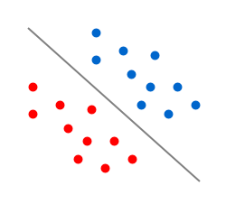

Perceptron Learning Algorithm
Perceptron Learning Algorithm is one of the simplest learning algorithm in machine learning. Its a linear classifier which learns a linear function using some set of weights and the features. Lets dive straight into the mathematical aspects to get a feel of it.
Notation:
$X$ - a vector of real valued numerical input features.
$Y$ - response with +1 and -1 as output
$m$ - number of features
In linear classification we try to divide the binary class with a linear separator. If m=2, it’s a line. If m=3, it’s a plane. Basically it’s a m-1 dimensional hyper-plane. For PLA to be applied, the data should be linearly separable.

$f(x,\theta)\ =\ sign(W_1X_1 + W_2X_2 + ... + W_mX_m)\ =\ sign(W^TX)$
$f(x,\theta)\ =\ \left\{\begin{array}{rcr}+1,\ \sum_{i=1}^m W_iX_i > 0\\-1,\ \sum_{i=1}^m W_iX_i < 0\end{array}\right. $
where W is the weight vector initialized to zero. We have the feature vector X, but we need to learn weight vetcor, W. To learn the weights, we use update rule, where we update the weights each time a point is classified incorrectly. We initialize the weights by zeros or small random values. The update equation would be,$W^{'} \leftarrow \ W\ +\ Y^{i}X^i\ \exists\ Y^{i} \neq f(x,\theta)\ $
That's it. Put this equation in a loop for say 1000 iteration and it will give weights of equation classifying the data into two classes. But why this works. The intuition is depicted in the following figures. Suppose the prediction of $ W*X^{i}$ was -1 but the actual class was +1. Now the the weight vector and feature vector would be somewhat as shown in Figure A. The angle between them would be greater than 90, so the dot product would be negative. If we add the product of actual class (+1) and feature vector to the weight vector, the resultant vector would lie in the quadrant 1, thereby making the product positive and classifying $ X^{i}$ in the correct class. Same for the other case. At each iteration, it classifies a single misclassified point in the correct class. After some iterations, if the data was linear classifiable, the final hyperplane would be as shown in the first image.
Here is my R-Code for PLA,
Suppose the prediction of $ W*X^{i}$ was -1 but the actual class was +1. Now the the weight vector and feature vector would be somewhat as shown in Figure A. The angle between them would be greater than 90, so the dot product would be negative. If we add the product of actual class (+1) and feature vector to the weight vector, the resultant vector would lie in the quadrant 1, thereby making the product positive and classifying $ X^{i}$ in the correct class. Same for the other case. At each iteration, it classifies a single misclassified point in the correct class. After some iterations, if the data was linear classifiable, the final hyperplane would be as shown in the first image.
Here is my R-Code for PLA,
answer <- 0
probability <- 0
n <- 10
for(pp in 1:1000){
x1<-runif(2,-1,1)
x2<-runif(2,-1,1)
slope<-(x1[2]-x2[2])/(x1[1]-x2[1])
temp1 <- runif(n,-1,1)
temp2 <- runif(n,-1,1)
data <- cbind(temp1,temp2) #dataset containing coordinates
y <- vector(length=n)
c <- x1[2] - slope*x1[1] #constant in the line equation
for(i in 1 : n) {
ifelse(data[i,2]-slope*data[i,1]-c < 0,y[i] <- -1,y[i] <- 1)
}
# Learning Starts Here
#########################################
data <- cbind(c(rep(1,n)),data)
w <- c(rep(0,3))
g <- vector(length=n)
notDone <- T
iteration <- 1
while(notDone){
for(j in 1:n){
g[j] <- t(w) %*% data[j,]
}
if(all(sign(g)==sign(y))){
ans <- iteration
notDone <- F
}
else{
for(k in 1:n){
if(sign(g[k])!=sign(y[k])){
w <- w + y[k]*data[k,]
break
}
}
}
iteration <- iteration + 1
}
##########################################
#Probability P[f(x)!=g(x)]
##########################################
prob1 <- runif(500,-1,1)
prob2 <- runif(500,-1,1)
probData <- cbind(prob1,prob2)
y <- vector(length=500)
g <- vector(length=500)
for(i in 1:500){
ifelse(probData[i,2]-slope*probData[i,1]-c < 0,y[i] <- -1,y[i] <- 1
}
probData <- cbind(c(rep(1,n)),probData)
for(j in 1:500){
g[j] <- t(w) %*% probData[j,]
}
miss <- 0
for(i in 1:500){
if(sign(g[i])!=sign(y[i])){
miss <- miss + 1
}
}
###########################################
probability <- probability + miss/500
answer <- answer+iteration
}
print(answer/1000)
print(probability/1000)